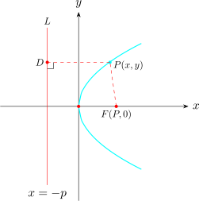
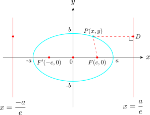
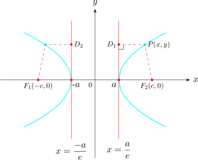
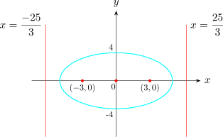

1.6 Eccentricity of a Conic Section
If we let \(e\) be a fixed positive number, \(F\) a fixed point, \(L\) a fixed line and let \(\left |PD\right |\) denote the distance from a point \(P\) to the line \(L\) then the ratio. \[\frac { \left |PF\right | }{\left |PD\right | } = e\hspace {0.3cm}\text {is called the eccentricity of a conic section}\]
- 1.
- If \(e = 1\), then the conic is a parabola.

- 2.
- If \(0< e < 1\), then the conic is an ellipse.

It can be shown that the eccentricity of an ellipse with foci \((\pm c, 0)\) and vertices \((\pm a, 0)\) is \(\dfrac {c}{a}\). i. e \(\hspace {0.3cm} e = \dfrac {c}{a}\) the corresponding directions are \(x = \pm \dfrac {a}{e}\).
- 3.
- If \(e>1\), the conic is a hyperbola.

Note. Directrices of an ellipse or hyperbola whose foci are \((0,\pm c)\) and vertices \((0,\pm a)\) are given by \(\boxed {y = \pm \dfrac {a}{e}}\)
A conic has foci \((\pm 3,0)\) and eccentricity \(e = \dfrac {3}{5}\). Find
- 1.
- its equation
- 2.
- the equations of its directrices.
Solution.
- 1.
- From the foci, \(c = 3\). Since \(e = \dfrac {3}{5}< 1\), the conic is an ellipse.
\[\text {But}\hspace {0.3cm} e = \frac {c}{a} \hspace {0.2cm} \implies \hspace {0.2cm} a = \frac {3}{3/5} = 5\] Thus, \(b^2 = a^2 - c^2 = 25 - 9 = 16\)
Therefore, the equation of the ellipse is \(\dfrac {x^2}{25} + \dfrac {y^2}{16} = 1\)
- 2.
- The equations of the directrices are \(\displaystyle {x = \pm \dfrac {a}{e}\hspace {0.4cm}\text {i.e}\hspace {0.3cm} x = \pm \frac {5}{3/5} = \pm \frac {25}{3}}\)

Questions on this section
Stuck on something here? Ask below and it stays attached to this topic.